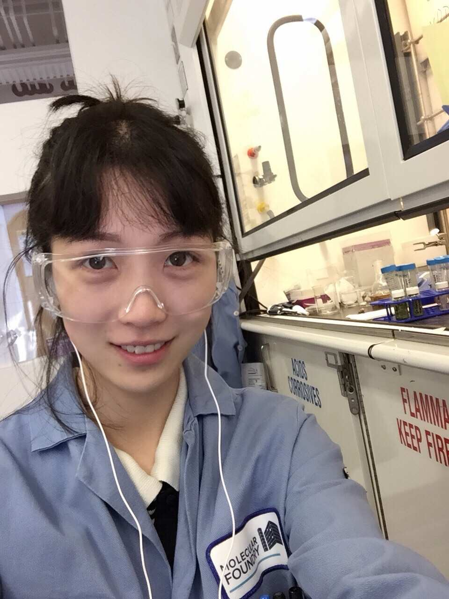

Hi, this is Chuanwan (川婉). 川 (chuān) means a stream of water (just like how it looks!), 婉 (wǎn) means gentleness. People often know me more as Christine.
I received my Bachelor's in Chemical & Biomolecular Engineering at UC Berkeley's College of Chemistry. I then worked for a few years at biotech companies. Now, I'm a Master's student in Scientific Computing at the Courant Institute at NYU.
My undergraduate research focused on a 2D material, Molybdenum disulfide (MoS2), using electrohydrodynamics techniques. I was lucky to have Prof. Vincent Tung as my advisor, and I also had the privilege to be affiliated with the Molecular Foundry at Lawerence Berkeley National Laboratory, and the Linac Coherent Light Source at SLAC National Accelerator Laboratory.
At Courant, I'm working with Prof. Esteban Tabak on developing computational algorithms for the Multidimensional Riemann Problem on Hyperbolic Systems of Conservation Laws.
Trained as an experimentalist, I migrated to become a theorist, while staying true to the fundamental principles of nature. 🌿

Experimentalist me (Berkeley, CA, 2018).
Click the photo to see the new me ->
“You have infinite potential when you approach your limits.”
\[\int_{-\infty}^{\infty}\delta(x-a)f(x)\,dx=f(a)\]